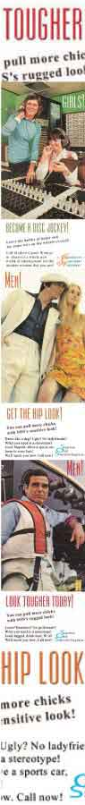

| |
LIES, NOISY LIES...
| |
With the only stipulation being that it must not advertise a real product, we were bracing ourselves for some bold progress in propaganda and forays into foolishness when the call went out for noise's FAKE ADS project - we weren't disappointed.
| |
"I often manipulate sourced material to subvert its original intention," says Tim Ryan about his hilarious 'Therapy' work, "turning things upon themselves and destroying their fundamental meaning."
Tim's fake ad (taken from a WW2 propaganda image) is a good example of this kind of art concept, and a format which many participants in the project chose to pursue - re-jigging and subverting previously published images to simultaneously take the piss out of the old image and to create a fresh message with the new text.
Like Mel Campbell's superb 'Australians Against Musical Abuse' campaign, a series of posters with pictures of pop stars and Amnesty-esque headlines than warn against the pitfalls of being a popular musician.
They seem to take themselves so seriously," Mel comments, "when what they do is quite superficial and ridiculous. They really are to be pitied! So my ads try to combine the silliness and the over-seriousness of pop, using the bleeding-heart rhetoric of charity advertising."
But are this lot cheating and taking the easy option? Are they epitomising post-modernist, cynical expression? Ask somebody who cares, and/or feels like debating such pointless, long-winded theories.
Then there were those like Chris Phillips, David Read and Xonrad Xonrad who chose to create ads from the ground up. Artistic purists, if you like. On yer fellas. Xonrad's series of 'Jesus' product ads take obvious stabs at the commercialisation of Christian culture in Western society, and (like Phillips) are works created entirely by hand illustrations.
Read's 'Ozonekill' ad is another one of his political jabs (you can check out Read's animations on our FLASH project page), this time going for some greenhouse gas issues with the help of a happy, tidy '50s housewife.
All in all, the project has displayed a healthy balance of humour and social awareness that has become synonymous with artistic works from young people across all noise projects, and fast becoming as 'Australian' as magpies, multiculturalism and meat pies.
October sees the produce of the FAKE ADS project realised on radio, in print and right here. Get an immediate fix of more funny frauds, complete with artist profiles and info, by going back to the FAKE ADS project homepage.
Featured left are Bim Ricketson's Fitter Better Faster Pussycat Kill! series.
(Psst... we reckon you'll also be interested in the POSTCARDS, E-WORKS and FLASH ANIMATIONS Projects)
|
|
|